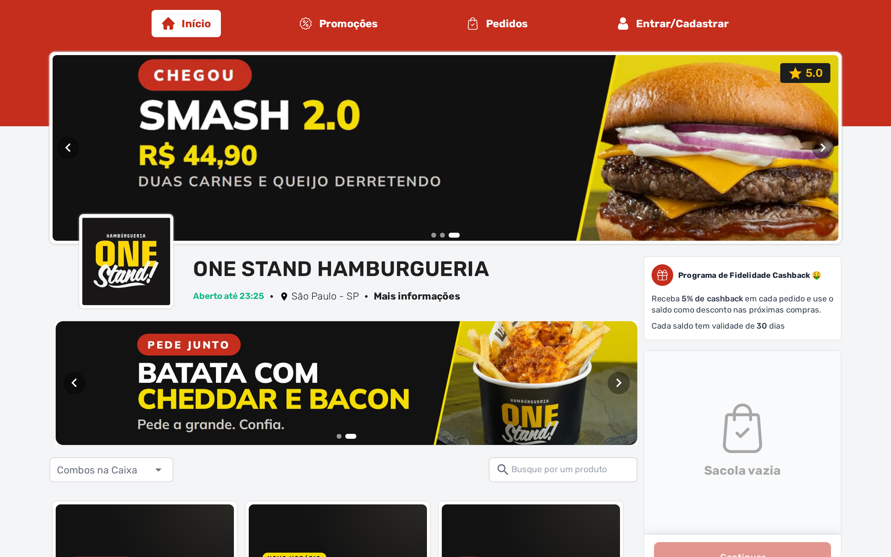

<!-- Capa. Afirmação, e não pergunta: os três primeiros carrosséis abriram
     perguntando ("Cansou de esquecer a bebida?", "Seu cardápio já fala
     inglês?"), e repetido isso deixa de ser gancho e vira cacoete da marca.

     O fato escolhido é o que ninguém sabe: o topo do cardápio aceitava **uma**
     foto, parada, e agora é carrossel — até cinco mídias depois da foto fixa,
     imagem ou vídeo, passando sozinhas. Quem mostra é a imagem: o cardápio do
     ONE Stand aberto no computador, com o vídeo do SMASH 2.0 rodando na capa.

     Notebook e não janela de navegador: a novidade é o cardápio virar vitrine, e
     vitrine se olha de longe. O aparelho põe a cena (alguém sentado, olhando
     aquilo) onde a janela poria só a página.

     Sozinho na faixa, então centralizado, grande e reto — 3D só quando tem
     conteúdo do lado. A captura é do cardápio de produção, com a nossa mídia
     injetada na resposta da API (`capturar-cardapio.py`). -->
<div class="slide slide--capa">
  <div class="topo">
    <span class="logo"></span>
    <span class="contador">1 de 7</span>
  </div>

  <div class="pilha g24" style="margin-top: 26px; max-width: 900px">
    <span class="pilula pilula--novidade">Novidade</span>
    <!-- `é&nbsp;um` mantém as duas palavras curtas juntas: sem isso a quebra
         deixa "um" sozinho abrindo a segunda linha. -->
    <h1 class="titulo">Sua capa agora é&nbsp;um <span class="destaque">carrossel</span></h1>
    <p class="subtitulo">
      Em vez de uma foto parada, mostre até cinco fotos e vídeos no topo do
      cardápio.
    </p>
  </div>

  <div class="figura" style="margin-top: 58px">
    <div class="notebook" style="width: 940px">
      <div class="notebook__tela">
        
      </div>
      <div class="notebook__base"></div>
    </div>
  </div>
</div>
